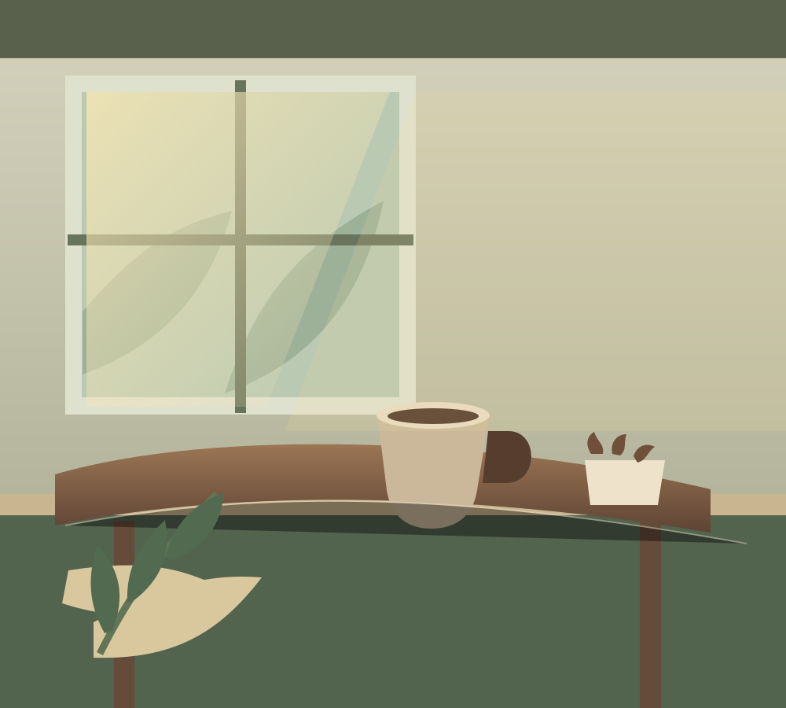

尊重每一顆豆子
依照咖啡豆本身的風味細心處理，讓產地個性自然展現。
OUR STORY
從一杯喜歡的咖啡開始，想把剛剛好的香氣與空間，分享給每個路過的人。
HOW IT BEGAN
我們想像一間這樣的咖啡店：不需要特別的理由，也能自在地坐下來。
於是，藍天咖啡從對咖啡的喜愛出發，慢慢整理出自己喜歡的樣子。挑選風味清爽的豆子、花時間掌握烘焙，再把咖啡沖進每天都想使用的杯子裡。
這裡的故事仍在書寫。每次相遇、每次分享，都讓這個小小的日常變得更完整。
WHAT WE BELIEVE
不追求複雜，只在意每個重要的小地方。
依照咖啡豆本身的風味細心處理，讓產地個性自然展現。
多一點觀察與調整，讓烘焙與沖煮回到恰好的平衡。
以真誠款待每一位來訪的人，讓喝咖啡成為舒服的小事。

A PLACE TO PAUSEOUR SPACE
我們想像的空間，有自然的光、有木頭的溫度，也有一張可以自在坐下的桌子。無論是短暫休息或慢慢度過午後，都希望你能找到舒服的節奏。
空間照片目前以示意插畫呈現，實際店面資訊待確認。
前往聯絡我們